8f4e is an experimental stack-oriented programming language designed for real-time audio synthesis, with a visual code editor built for live coding.
Stack-oriented programming means that instead of using variables, instructions take their operands from a stack and push their results back onto the same stack for the next instruction to consume.
Open in examples ↗Why stack-oriented? Because 8f4e targets stack machines such as WebAssembly and the JVM. Staying close to their execution model makes it possible to write faster programs.
Pointers are represented as wires in the editor, making it possible to see which memory item each pointer refers to. Because raw pointers can address any location in the program's memory, these visual connections make data flow easier to follow.
Open in examples ↗All memory items are laid out sequentially in memory, so variables declared one after another occupy adjacent memory locations.
They are aligned on a 32-bit grid, which means every memory item starts at an address that is a multiple of 4 bytes.
Open in examples ↗UI elements such as sliders, switches and plots can be added directly to modules, making it possible to shape and inspect the sound while the program is running.
Open in examples ↗Examples
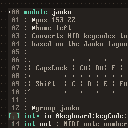
Six-operator FM synth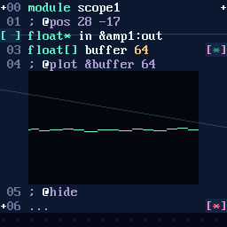
Hymn to Aurora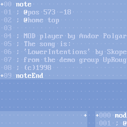
Lower Intentions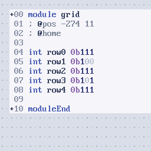
Digit classifier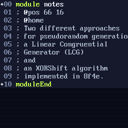
Random generators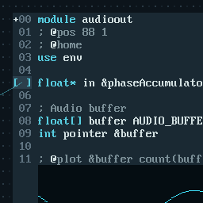
Audio buffer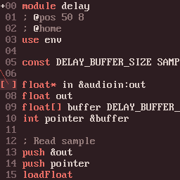
Audio loopback with delay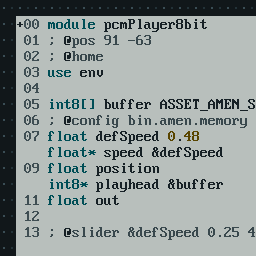
Variable-speed sample player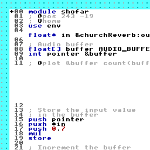
Risen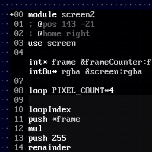
WASM texture overlay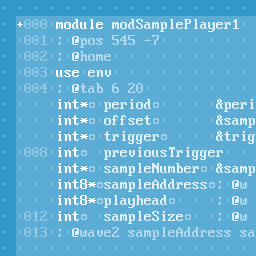
Aftertouch